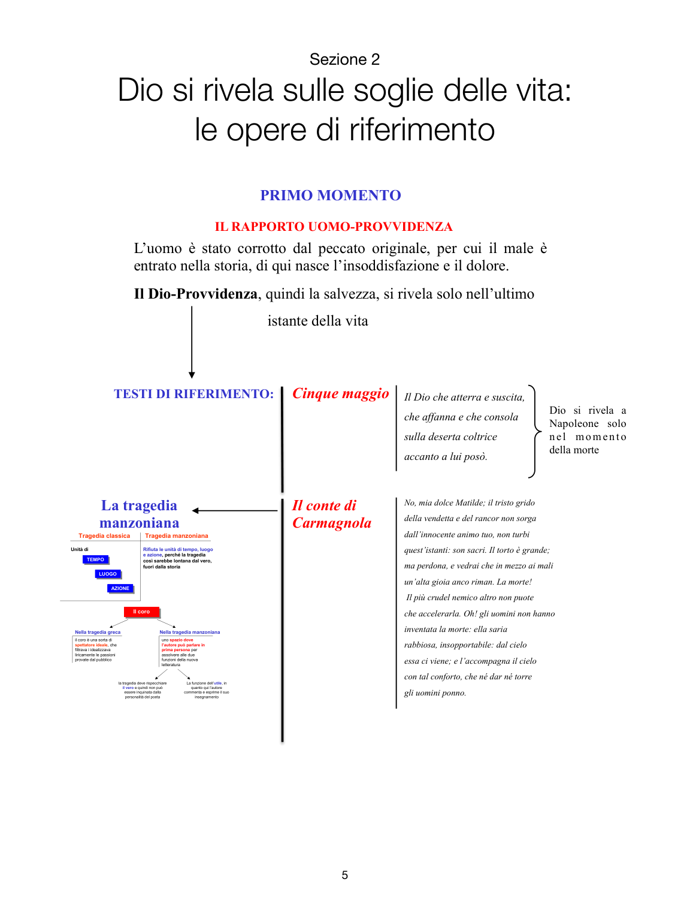
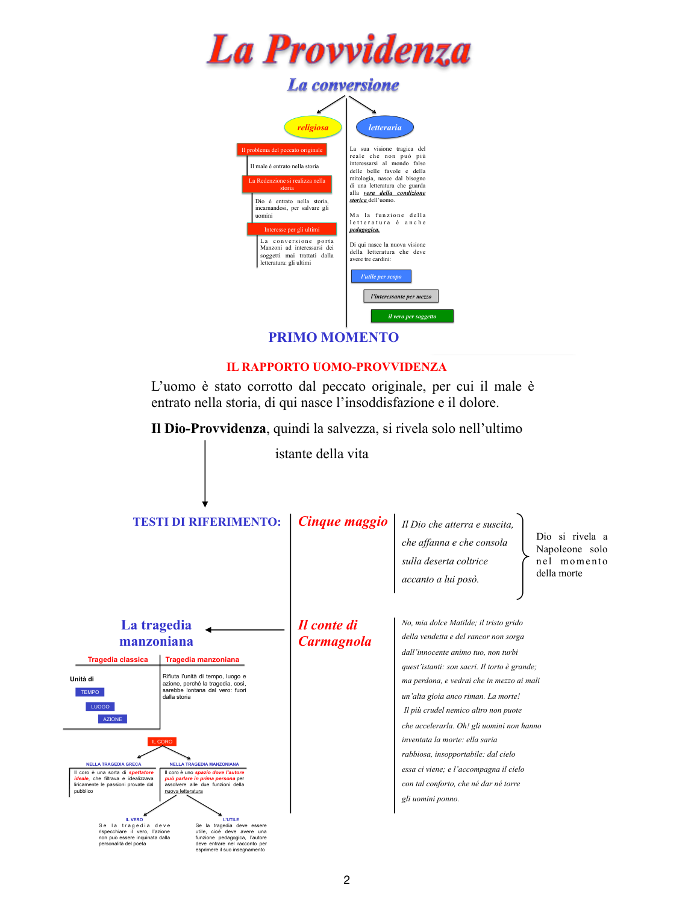

Primo momento: il Dio che si rivela sulle soglie della vita
Nel primo percorso, la Provvidenza appare soprattutto nell’ultimo istante dell’esistenza. Il male domina la storia, e la salvezza si affaccia soprattutto sul bordo della morte.

Lo schema del PDF collega il primo momento a Il cinque maggio e a Il conte di Carmagnola.
Le due opere chiave
Il cinque maggio non esalta Napoleone. Manzoni non lo trasforma in eroe assoluto: lascia ai posteri l’ardua sentenza. Il punto decisivo arriva alla fine, quando Dio si rivela proprio nel momento dell’agonia.
Il conte di Carmagnola mostra invece un uomo giusto travolto dall’ingiustizia storica. Il male vince sulla terra, ma la morte si apre come possibilità di ricongiungimento con Dio. È una visione severa: la storia resta ferita, la grazia non coincide ancora con una trasformazione piena del mondo storico.
La tragedia manzoniana contro la tragedia classica
La lezione insiste molto su un punto spesso trattato in modo scolastico e invece decisivo: Manzoni rifiuta le unità classiche di tempo, luogo e azione, perché allontanano dal vero. La tragedia non deve vivere fuori dalla storia, come se fosse un laboratorio astratto del sublime.
Anche il coro cambia funzione. Nella tragedia greca era lo spettatore ideale che filtrava liricamente le passioni; in Manzoni diventa lo spazio in cui l’autore può intervenire direttamente. Qui emerge la tensione tra due esigenze: da un lato il vero, che chiede di non inquinare l’azione; dall’altro l’utile, che chiede di parlare, commentare, insegnare.

Pagina-sintesi del primo momento: peccato originale, Provvidenza, tragedia e coro.